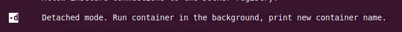
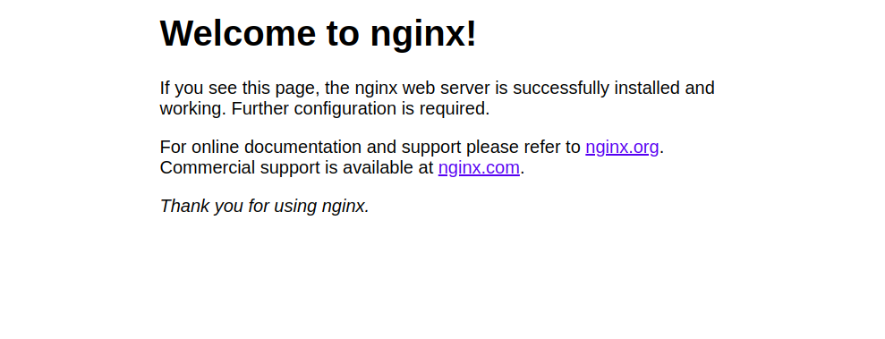
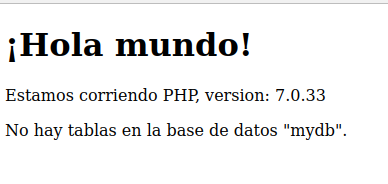
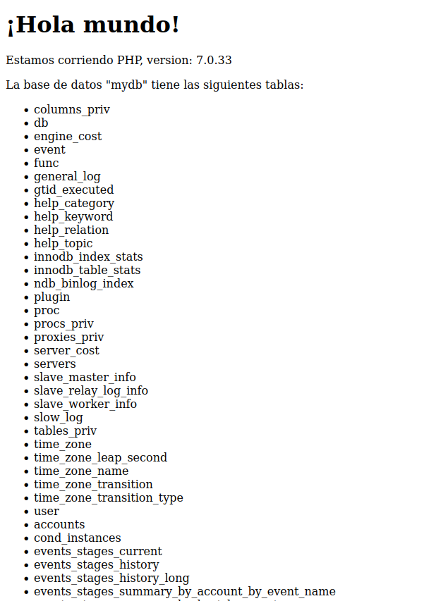

Práctica 6.2 - Despliegue de una aplicación PHP con Nginx y MySQL usando Docker y docker-compose
Introducción
¡Atención!
En caso de que tengáis problemas, esta práctica está comprobada y funcionando usando las siguientes versiones:
- Docker: Docker version 20.10.17, build 100c701
- Docker-compose: Docker Compose version v2.10.2
Recordando qué es docker-compose
Como vimos en la parte de teoría para ejecutar nuestra aplicación en docker creamos un fichero llamado Dockerfile y este fichero contiene una configuración. Esta configuración varía dependiendo de qué queremos poner en el contenedor, ya que no es lo mismo poner una página web, que una base de datos.
Este proceso, de crear todos los Dockerfile y ejecutarlos puede ser bastante tedioso, ya que debemos pensar que una aplicación de tamaño mediano es probable que tenga un front end, un back end, quizá algunos background-workers así como la base de datos, sistema de caché, sistema de colas o de message-broker... por lo que cada uno de nuestros servicios será un contenedor diferente.
Por lo tanto, crear múltiples Dockerfile y ejecutarlos todo en un script queda largo y feo.
Aquí es donde entra docker-compose el cual es una herramienta que nos permite definir y correr múltiples contenedores en Docker. Estos múltiples contenedores se definen en un fichero denominado docker-compose con la extensión .yml. Luego, con un solo comando, crea e inicia todos los servicios desde su configuración.

Compose funciona en todos los entornos: producción, puesta en escena, desarrollo, pruebas, así como flujos de trabajo de CI.
Usar Compose es básicamente un proceso de tres pasos:
-
Definir el entorno de nuestra aplicación con un Dockerfile para que pueda reproducirse en cualquier lugar.
-
Definir los servicios que componen la aplicación
docker-compose.ymlpara que puedan ejecutarse juntos en un entorno aislado. -
Ejecutar
docker-compose upy Compose inicia y ejecuta toda su aplicación.
Este proceso se denomina orquestación de contenedores y se lleva a cabo de forma local al interior de los containers, quienes, además, se encontrarán unidos a través de una red de Docker.
Instalación de docker-compose
Proceso de dockerización de Nginx+PHP+MySQL
1. Estructura de directorios
Para que quede claro todo el proceso que vamos a seguir, la estructura de directorios que nos debe quedar en nuestra Debian al finalizar la práctica es esta:
/usuario/home/practica6-2/
├── docker-compose.yml
├── nginx
│ ├── default.conf
│ └── Dockerfile
├── php
│ └── Dockerfile
└── www
└── html
└── index.php
2. Creación de un contenedor Nginx
Paara empezar, necesitamos crear y correr un contendor Nginx que permita alojar nuestra aplicación en PHP.
Dentro de la carpeta /usuario/home/practica6-2/ debemos haber creado o crear ahora el archivo docker-compose.yml
Y editamos este archivo con el editor de texto que prefiramos, nano por ejemplo:
Y añadimos la siguientes líneas:
Y lo guardamos.
El archivo que acabamos de crear será el encargado de descargarse la última versión de la imagen de Nginx, crear un contenedor con ella y publicar o escuchar en el puerto 80 del contenedor que también se corresponderá con el 80 de nuestra máquina (80:80).
Iniciemos entonces este proceso:
Con la opción-d (de daemon), estamos indicando que el contenedor se ejecute en background o segundo plano:

Para comprobar que el contenedor está corriendo, podemos hacer:
Y deberíamos ver algo como:
CONTAINER ID IMAGE COMMAND CREATED STATUS PORTS NAMES
c6641e4d5bbf nginx:latest "/docker-entrypoint.…" 5 seconds ago Up 3 seconds 0.0.0.0:80->80/tcp, :::80->80/tcp nginx-container
Además, si abrimos el navegador de nuestra máquina anfitrión y accedemos a http://IP_Maq_Virtual deberíamos ver la página de bienvenida de Nginx:

3. Creación de un contenedor PHP
Creamos la carpeta y el documento pertinente dentro de ella, si no lo habíamos hecho antes:
Y dentro deindex.php añadimos el siguiente código:
<!DOCTYPE html>
<head>
<title>¡Hola mundo!</title>
</head>
<body>
<h1>¡Hola mundo!</h1>
<p><?php echo 'Estamos corriendo PHP, version: ' . phpversion(); ?></p>
</body>
Guardad el archivo y cread, si no lo habíais hecho antes, un directorio llamado nginx dentro del directorio del proyecto:
Ahora vamos a crear el archivo de configuración por defecto para que Nginx pueda correr la aplicación PHP:Y dentro de ese archivo, colocaremos la siguiente configuración:
server {
listen 80 default_server;
root /var/www/html;
index index.html index.php;
charset utf-8;
location / {
try_files $uri $uri/ /index.php?$query_string;
}
location = /favicon.ico { access_log off; log_not_found off; }
location = /robots.txt { access_log off; log_not_found off; }
access_log off;
error_log /var/log/nginx/error.log error;
sendfile off;
client_max_body_size 100m;
location ~ .php$ {
fastcgi_split_path_info ^(.+.php)(/.+)$;
fastcgi_pass php:9000;
fastcgi_index index.php;
include fastcgi_params;
fastcgi_param SCRIPT_FILENAME $document_root$fastcgi_script_name;
fastcgi_intercept_errors off;
fastcgi_buffer_size 16k;
fastcgi_buffers 4 16k;
}
location ~ /.ht {
deny all;
}
}
Dockerfile dentro del directorio nginx. En este archivo se copiará el archivo de configuración de Nginx al contenedor correspondiente.
Así pues:
Y dentro de este archivo:Y ahora editamos nuestro archivo docker-compose.yml:
services:
nginx:
build: ./nginx/
container_name: nginx-container
ports:
- 80:80
links:
- php
volumes:
- ./www/html/:/var/www/html/
php:
image: php:7.0-fpm
container_name: php-container
expose:
- 9000
volumes:
- ./www/html/:/var/www/html/
docker-compose.yml se creará un nuevo contenedor PHP-FPM en el puerto 9000, enlazará el contenedor nginx con el contendor php, así como creará un volumen y lo montará en el directorio /var/www/html de los contenedores.
Así pues, ejecutaremos el nuevo contenedor volviendo a ejecutando compose. Cuidado pues se debe ejecutar el comando en el mismo directorio donde tengamos nuestro archivo docker-compose.yml:
Y comprobamos que los contenedores están corriendo:
Debiendo ver algo como:
CONTAINER ID IMAGE COMMAND CREATED STATUS PORTS NAMES
82c8baf15221 docker-project_nginx "/docker-entrypoint.…" 23 seconds ago Up 22 seconds 0.0.0.0:80->80/tcp, :::80->80/tcp nginx-container
10778c6686d8 php:7.0-fpm "docker-php-entrypoi…" 25 seconds ago Up 23 seconds 9000/tcp php-container
Y si ahora volvemos a acceder a http://IP_Maq_Virtual, veremos la página Hola mundo:
4. Creación de un contenedor para datos
Como véis, hemos montado el directorio www/html en ambos contenedores, el de nginx y el de php. Sin embargo, esta no es una forma adecuada de hacerlo. En este paso crearemos un contenedor independiente que se encargará de contener los datos y lo enlazaremos con el resto de contenedores.
Para llevar a cabo esta tarea, volvemos a editar el docker-compose.yml:
nginx:
build: ./nginx/
container_name: nginx-container
ports:
- 80:80
links:
- php
volumes_from:
- app-data
php:
image: php:7.0-fpm
container_name: php-container
expose:
- 9000
volumes_from:
- app-data
app-data:
image: php:7.0-fpm
container_name: app-data-container
volumes:
- ./www/html/:/var/www/html/
command: "true"
Así que para recrear y lanzar todos los contenedores ejecutamos de nuevo (recordad, dentro del directorio donde se encuentra el archivo):
Y volvemos a verificar que están corriendo todos:
Debiendo ver algo como:
CONTAINER ID IMAGE COMMAND CREATED STATUS PORTS NAMES
849315c7ffc0 docker-project_nginx "/docker-entrypoint.…" 27 seconds ago Up 25 seconds 0.0.0.0:80->80/tcp, :::80->80/tcp nginx-container
59a0d7040fd8 php:7.0-fpm "docker-php-entrypoi…" 28 seconds ago Up 27 seconds 9000/tcp php-container
fbca95944234 php:7.0-fpm "docker-php-entrypoi…" 29 seconds ago Exited (0) 28 seconds ago app-data-container
5. Creación de un contenedor MySQL
En esta sección crearemos un contenedor de una base de datos MySQL y lo enlazaremos con el resto de contenedores.
Primero, modificaremos la imagen PHP e instalaremos la extensión PHP para MySQL, de tal forma que nos permita conectarnos desde nuestra aplicación PHP a nuestra BBDD MySQL.
Creamos, si no lo teníamos ya, nuestro directorio php y dentro de él, el archivo Dockerfile:
Y dentro del Dockerfile ponemos:
Y una vez más, debemos editar docker-compose.yml con el objetivo de que se creen el contenedor para MySQL y el contenedor de los datos de MySQL que contendrá la base de datos y las tablas:
services:
nginx:
build: ./nginx/
container_name: nginx-container
ports:
- 80:80
links:
- php
volumes_from:
- app-data
php:
build: ./php/
container_name: php-container
expose:
- 9000
links:
- mysql
volumes_from:
- app-data
app-data:
image: php:7.0-fpm
container_name: app-data-container
volumes:
- ./www/html/:/var/www/html/
command: "true"
mysql:
image: mysql:5.7
container_name: mysql-container
volumes_from:
- mysql-data
environment:
MYSQL_ROOT_PASSWORD: secret
MYSQL_DATABASE: mydb
MYSQL_USER: myuser
MYSQL_PASSWORD: password
mysql-data:
image: mysql:5.7
container_name: mysql-data-container
volumes:
- /var/lib/mysql
command: "true"
Después de guardar este archivo, editamos el archivo index.php y hacemos algunos cambios para comprobar la conexión a la base de datos.
El archivo index.php debe quedar así:
<!DOCTYPE html>
<head>
<title>¡Hola mundo!</title>
</head>
<body>
<h1>¡Hola mundo!</h1>
<p><?php echo 'Estamos corriendo PHP, version: ' . phpversion(); ?></p>
<?
$database ="mydb";
$user = "myuser";
$password = "password";
$host = "mysql";
$connection = new PDO("mysql:host={$host};dbname={$database};charset=utf8", $user, $password);
$query = $connection->query("SELECT TABLE_NAME FROM information_schema.TABLES WHERE TABLE_TYPE='BASE TABLE'");
$tables = $query->fetchAll(PDO::FETCH_COLUMN);
if (empty($tables)) {
echo "<p>No hay tablas en la base de datos \"{$database}\".</p>";
} else {
echo "<p>La base de datos \"{$database}\" tiene las siguientes tablas:</p>";
echo "<ul>";
foreach ($tables as $table) {
echo "<li>{$table}</li>";
}
echo "</ul>";
}
?>
</body>
</html>
Guardad el archivo y lanzad los contenedores una vez más:
Y verificamos que están ejecutándose:
Y veremos:CONTAINER ID IMAGE COMMAND CREATED STATUS PORTS NAMES
d3e82747fe0d mysql:5.7 "docker-entrypoint.s…" 39 seconds ago Up 38 seconds 3306/tcp, 33060/tcp mysql-container
606320e5a7f8 mysql:5.7 "docker-entrypoint.s…" 41 seconds ago Exited (0) 39 seconds ago mysql-data-container
ca4f63797d11 docker-project_php "docker-php-entrypoi…" 2 hours ago Up 2 hours 9000/tcp php-container
849315c7ffc0 docker-project_nginx "/docker-entrypoint.…" 2 hours ago Up 2 hours 0.0.0.0:80->80/tcp, :::80->80/tcp nginx-container
fbca95944234 php:7.0-fpm "docker-php-entrypoi…" 2 hours ago Exited (0) 39 seconds ago app-data-
6. Verificación de conexión a la base de datos
Si ahora accedemos a http://IP_Maq_Virtual, deberíamos obtener la siguiente pantalla:

Como podéis ver, nos dice que no tenemos ninguna tabla en la base de datos mydb.
Sin embargo, el hecho es que realmente sí existen algunas tablas, símplemente no son visibles para un usuario normal. Si quisiéramos verlas, debemos editar el archivo index.php y cambiar $user por root y $password a secret.
Es decir:
Y cambiar las líneas: Guardad el archivo y refrescad la página. Deberías obtener ahora una pantalla con todas las tablas de la base de datos, tal que así:
Tarea
Documenta, incluyendo capturas de pantallas, el proceso que has seguido para realizar el despliegue de esta nueva aplicación, así como el resultado final.
Referencias
How to Deploy a PHP Application with Nginx and MySQL Using Docker and Docker Compose
Evaluación
| Criterio | Puntuación |
|---|---|
| Se muestra una correcta estructura de directorios | 2.5 puntos |
| Se muestra correctamente la página que informa de la versión de PHP corriendo así como de que no hay tablas en la BBDD | 3.5 puntos |
| Muestra correctametne las tablas de la BBDD con el usuario adecuado | 2 puntos |
| Se ha prestado especial atención al formato del documento, utilizando la plantilla actualizada y haciendo un correcto uso del lenguaje técnico | 1 puntos |